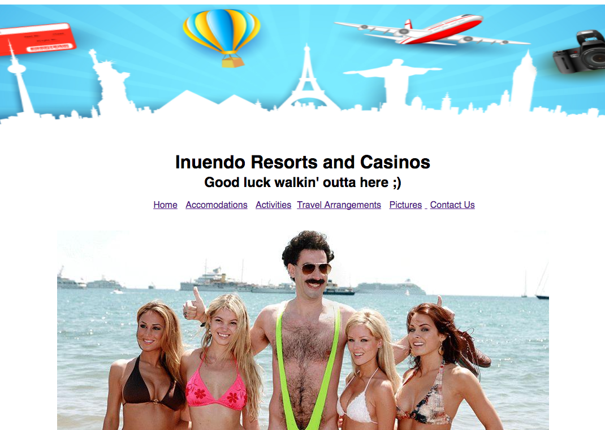

Aaron Rohrbacher
Portland's newest budding programmer


Aaron Rohrbacher is a Portland "newbie," freshly moved from Bend, Oregon. Growing up in Bend, Aaron picked up the clarinet at a young age, and quickly discovered the tenor saxophone. Aaron's interest in technology developed early as well; as a ten-year-old boy, Aaron was amazed to discover that he could log in to the library terminal application from home, where he could conveniently "renew" his books that were already accruing late fees (he was discovered shortly thereafter, and all fines have been paid in full)! With technology and music as his one-two-punch, Aaron is very excited to be attending Epicodus, in a city like Portland- where the technology and music flow (and often even coincide)! He is looking forward to working as a junior Ruby, PHP, and Rails developer- hopefully right here in Portland! And, of course, the sax will make an appearance once in a while!
Making Happy Customers
"It's nice to have a tech guy who I can talk to!"
Current Projects

Bend Instrument Repair Website
A functional website using the SmoothScroll jquery script and some PHP.

A website for a fake resort that would likely not exist anyway with its current business model. Written in HTML and CSS.
My Background
After studying Music for three years at the University of Oregon, I moved to Bend to pursue a career as a musician and music teacher. As a saxophone teacher and player, I quickly learned that a "day job" would be necessary! I discovered that I was able to learn and perform in the grocery industry quickly, eventually becoming the Front End Manager of a well-known local specialty store.
Let me tell ya', I'm so excited and grateful to be studying at Epicodus!
Though I've always "programmed" as a hobby, I'm thrilled to take my dull skills to the sharpener! With some knowledge of PHP, I was able to write a program which would track my student's contact information, weekly lesson notes, and my own lesson schedule, by student, room, and time. When I finished that program, I knew I would eventually attempt to make this my career.
My current hobbies and interests
While I'll always be a musician, and did bring my instruments with me to Portland, I'm genuinely intrigued and excited by programming and software development. The ability to improve lives via software, mobile applications, and dynamic websites is amazing to me, and I continue to be suprised by this intensely innovative space.
Meanwhile, here are some saxophone players I love to listen to, beginning with my most recent discovery:
- Chad Lefkowitz-Brown
- David Evans
- Joe Manis
- Michael Brecker
- Joshua Redman